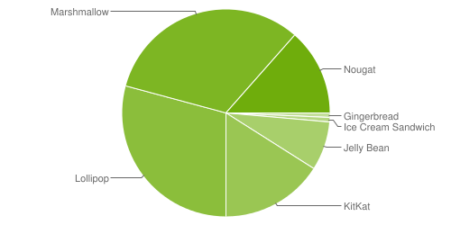

Here's a handy table of Android code names, version numbers and API levels.
| Code name | Version | API level |
|---|---|---|
| Cupcake | 1.5 | 3 |
| Donut | 1.6 | 4 |
| Eclair | 2.0 | 5 |
| Eclair | 2.0.1 | 6 |
| Eclair | 2.1 | 7 |
| Froyo | 2.2.x | 8 |
| Gingerbread | 2.3 - 2.3.2 | 9 |
| Gingerbread | 2.3.3 - 2.3.7 | 10 |
| Honeycomb | 3.0 | 11 |
| Honeycomb | 3.1 | 12 |
| Honeycomb | 3.2.x | 13 |
| Ice Cream Sandwich | 4.0.1 - 4.0.2 | 14 |
| Ice Cream Sandwich | 4.0.3 - 4.0.4 | 15 |
| Jelly Bean | 4.1.x | 16 |
| Jelly Bean | 4.2.x | 17 |
| Jelly Bean | 4.3 | 18 |
| KitKat | 4.4 | 19 |
| Lollipop | 5.0 | 21 |
| Lollipop | 5.1 | 22 |
| Marshmallow | 6.0 | 23 |
| Nougat | 7.0 | 24 |
| Nougat | 7.1 | 25 |
| Oreo | 8.0 | 26 |
| Oreo | 8.1 | 27 |
| Pie | 9.0 | 28 |
And to see a current breakdown of what percentage of Android devices are using the various versions, visit - https://developer.android.com/about/dashboards/index.html
Example Chart from Aug 8, 2017

This chart shows that 91% of all Android devices would be covered if we built something going back to KitKat version 4.4 / API 19.
75% of all Android devices would be covered if we only built for Lollipop and up.